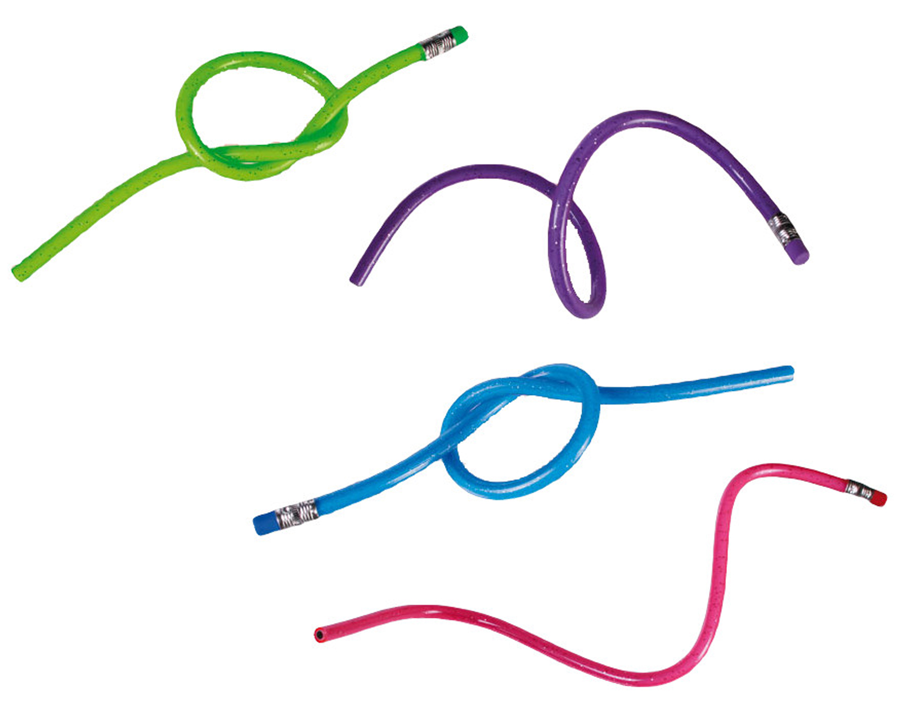

To Order
This catalog only display the product we currently have in stock. To purchase or rent a product, please contact 0812341234. You can either order the products as 'normal' or 'premium' with a little extra charge. Premium customers will recieve the product in a secure box, along with a surprise weekly drink.
| Shipping Time |
| In School Shipment | Nationwide Shipment | International Shipment | |
| Purchase | 5 minutes | 1 day | 3 days | Normal Pencil |
| 10 minutes | 1 day | 3 days | Premium Pencil |
| Rent | 5 minutes | Not Available | Not Available | Normal Pencil |
| 5 minutes | Not Available | Not Available | Premium Pencil |
Broken Pencils

These pencils are from mean previous users. They are still usable, but in a bad shape. We do not want to waste any of the Earth's precious resources so we are offering you a chance to be conservative by sacrificing your comfortability in writing.
- Never out of stock
- Cheap alternative
- For chewing
- 50 satang per pencil
Standard HB Pencil

We do acknowledge that there is a feud between the HB pencil users and 2B pencil users for writing. This website does not choose sides and therefore provide both standard Staedler HB and 2B pencils.
- Polished of luster
- Simplistic design
- Modern hexagonal grip
- 3 baht per pencil
Standard 2B Pencil

We do acknowledge that there is a feud between the HB pencil users and 2B pencil users for writing. This website does not choose sides and therefore provide both standard Staedler HB and 2B pencils.
- Polished of luster
- Simplistic design
- Modern hexagonal grip
- 3 baht per pencil
Drawing Set


This set is for customers who seek good quality products with a low price for drawing. We have included both the grey scale pencils and color pencils in the set.
- Polished of luster
- Simplistic design
- Staedler grey scale drawing pencils
- Woodless color pencils
- Modern hexagonal grip
- 80 baht per set
Flexible Pencil

This type of pencil is quite rare, but they are the savior of the CMIS Pencil Shop the provided us investment money. Popular among kids, flexible pencil is one of its kind!
- Flexible as the name says! Can tie knots and prevent bicycles from being stolen.
- Comes in four collectable different colors: green, purple, blue, and pink
- Long lifespan
- 5 baht per pencil